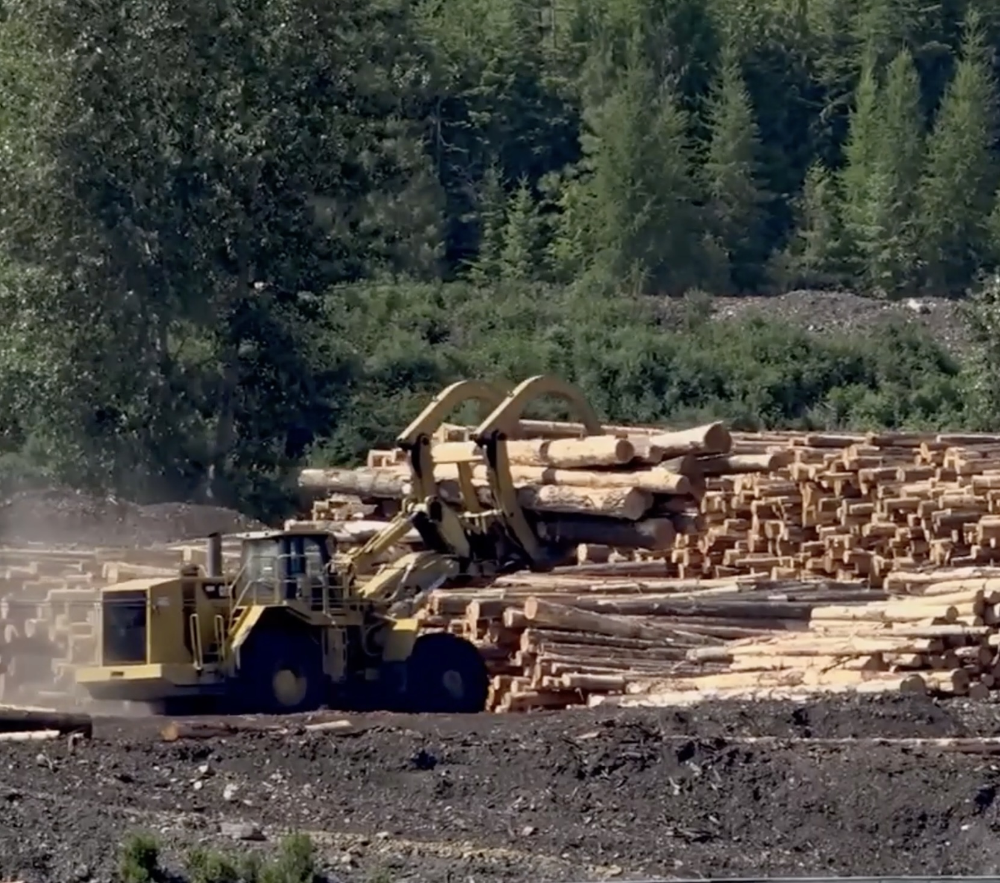
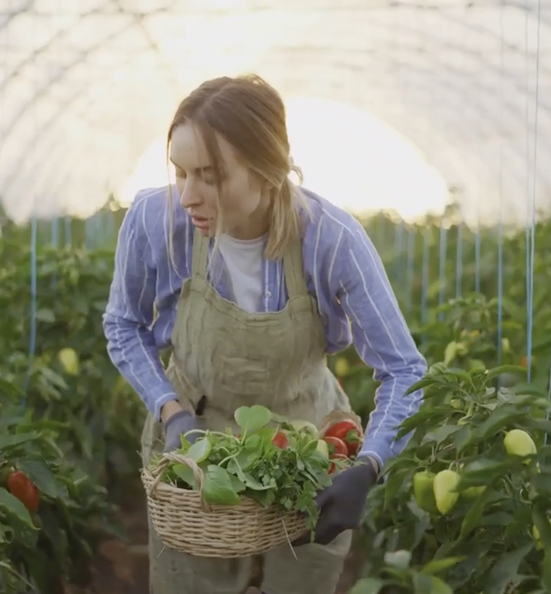

TapyblReels


Importance of sustainability
Law & Sustainability
Assessable
Environmental Laws
Law & Sustainability
Non Assessable
Global Cooperation
Law & Sustainability
Non Assessable
Individual and Collective Action
Law & Sustainability
Assessable
user
Caption
Question goes here